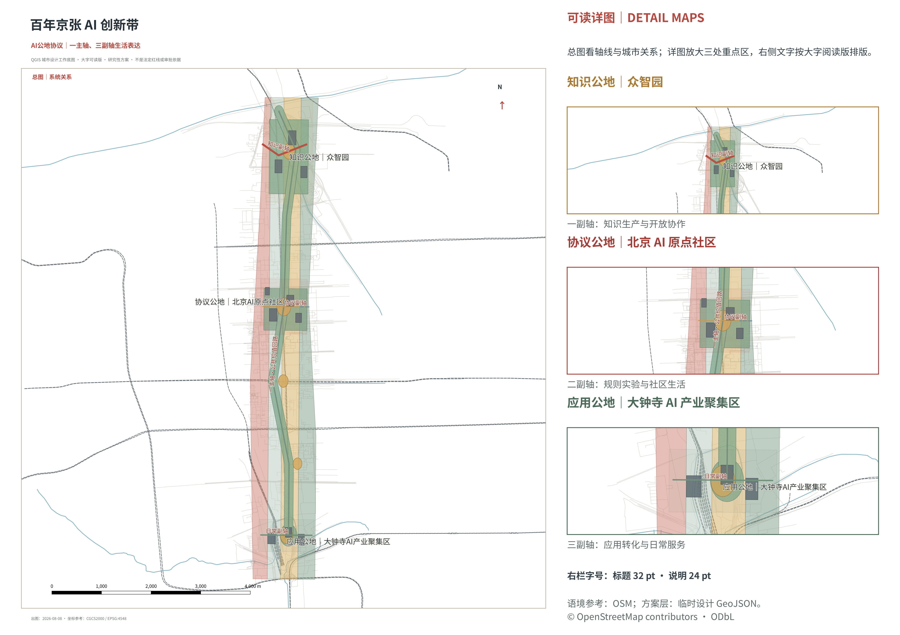
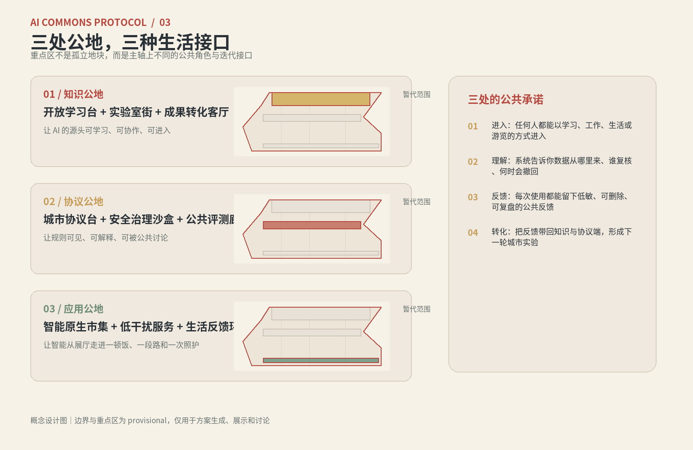
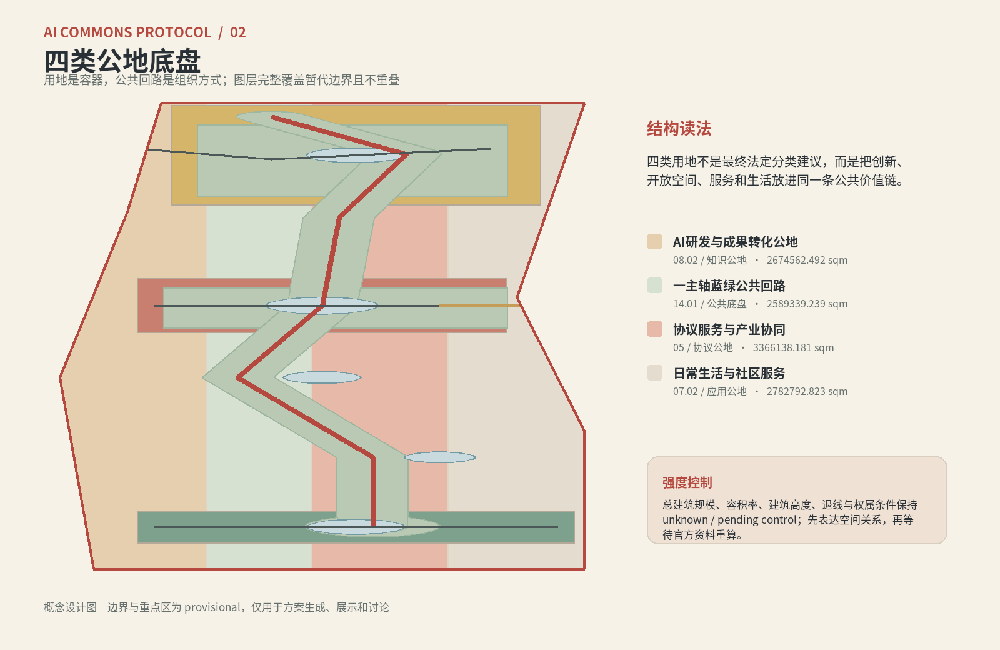
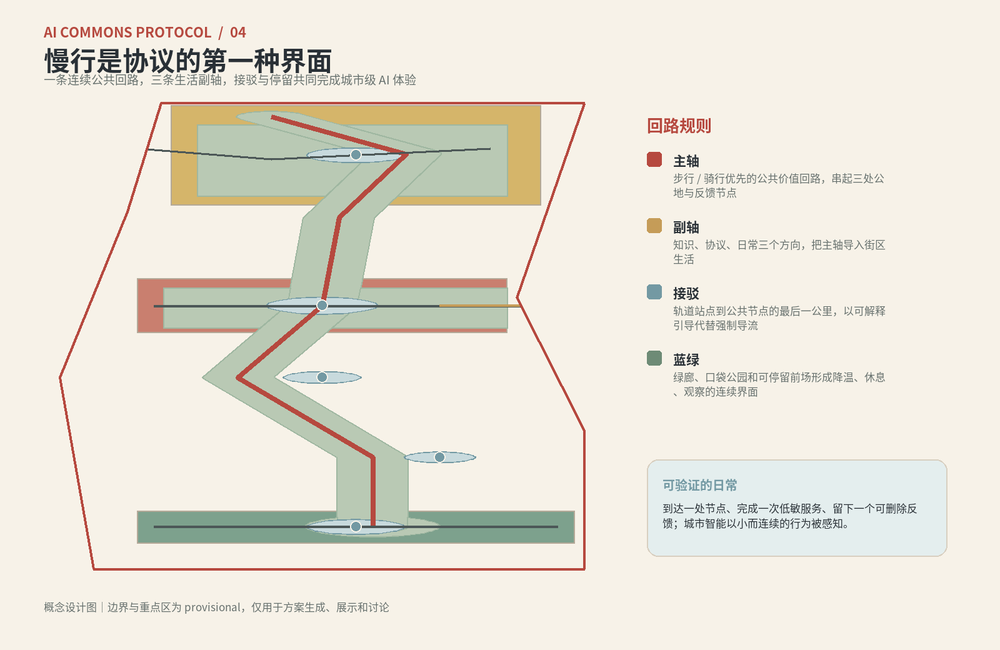
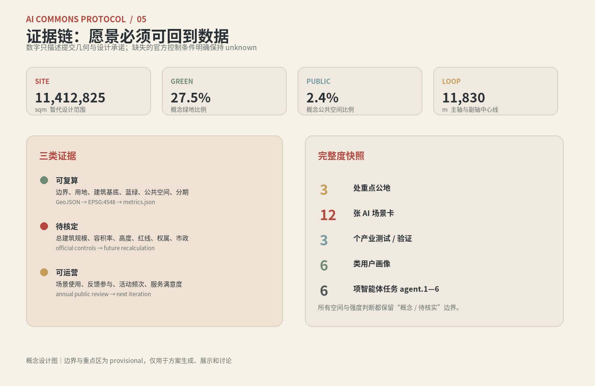

SCOPE 01
百年京张文化带
统筹研究文化记忆、高校科研、中关村创新、AI 产业服务与公共生活，形成区域协同叙事。
文化
产业
区域协同
把 AI 从园区效率工具，转译成人人可以使用、理解、反馈和共同维护的城市公共基础设施。
知识公地 提供源头与学习，协议公地 让标准与安全可见，应用公地 把智能带回街道与生活。
本展示页把空间、场景、指标、任务覆盖、自检状态、来源和假设放在同一条证据链上。
一条公共价值主轴，串联三处公地；暂代边界仅用于概念设计。

AI 不只被放进建筑和园区，也进入公共空间的规则、节奏和反馈。主轴负责连接，副轴负责渗透，三个公地分别回答“从哪里来、如何被信任、怎样成为日常”。
知识公地协议公地应用公地空间关系已生成，官方边界与控制条件待补。
geometry/site_boundary.geojson#SITE-001
研究 → 组织 → 体验，三个尺度互相回流。
统筹研究文化记忆、高校科研、中关村创新、AI 产业服务与公共生活，形成区域协同叙事。
总体设计将三大定位、五大功能、三区两翼转译为一主轴、三副轴、蓝绿和分期图层。
众智园做知识源头，AI原点做公共协议，大钟寺做应用日常；三处均为 provisional 重点区。
三种公共角色，共用一条可回访的价值回路。
开放学习台、实验室街、成果转化客厅。AI 的源头可进入、可学习、可协作。
城市协议台、安全治理沙盒、公共评测廊。规则、来源、版本和人工复核可见。
智能原生市集、慢行接驳、低干扰生活服务。智能从展厅走进一顿饭、一段路和一次照护。

四类概念容器完整覆盖暂代范围；强度条件保持 unknown。

10 个概念建筑基底表达保留、改造、新建和开放首层的关系，不代表现状、产权、拆迁或许可。更新先做公共界面，再等待官方控规、权属、市政、消防和文保资料。
geometry/buildings.geojson#BLDG-001..BLDG-010
P01 公共价值回路；P02 协议公地大厅；P03 知识公地学习林荫场；P04 智能原生市集口；P05 反馈环廊；P06 端侧算力驿站；P07 京张记忆回路门；P08 年度开放运营。
总建筑规模、容积率、建筑高度、退线、道路红线、停车与市政容量未取得官方条件，全部保持 unknown / pending control。
慢行是协议的第一种界面；接驳线只表达概念关系。

主轴绿廊、北端林荫场、中部中庭链、南端口袋公园和五个公共节点形成可停留、可观察、可反馈的日常底盘。
步行/骑行优先可解释接驳降温休息
geometry/roads.geojson#ROAD-001..ROAD-005
geometry/green_space.geojson#GREEN-001..GREEN-004
geometry/public_space.geojson#PUBLIC-001..PUBLIC-005
12 张场景卡、3 个产业测试/验证场景、6 类用户画像；每项都有人工复核和退出边界。
开放学习台、城市协议台、安全治理沙盒、慢行断点诊断，把知识和规则落到可见动作。
低干扰无障碍导航、蓝绿步行助手、校企转化客厅、端侧算力驿站，先小规模验证。
智能原生市集、公共服务会客厅、全球AI活动周路线、反馈回路站，让智能进入生活。
开源开发者创业/研究团队企业访问者周边居民学生与青年人才照护者与老年使用者
默认最小化采集、主动授权、短期保存、可查看、可删除、可撤回；线下人工服务永远可接管。
从 GeoJSON 到 EPSG:4548 到 metrics.json；展示数字不替代专业审批条件。

agent.1—agent.6 与公告任务由 compliance_matrix.json 映射到正文、图层、指标和版面。
AI公地协议、英文名、开放括号视觉语法、三大定位、五大功能、三区两翼和总体结构图。
6 个全球案例镜像、八要素生态图谱、众智园/AI原点/科技服务翼的空间映射。
12 张场景卡、3 个测试/验证、6 类画像、隐私边界和场景—空间—运营关系。
京张记忆回路、东西缝合、南北贯通、4 个朝圣地标、荣誉展示和组件库方向。
京张铁路记忆、中关村创新文化、AI新文化、导视、标识、国际传播文案。
四季活动、开发者社区、场景开放、公共回访、贡献者荣誉和转化路径。
formal package · ready for review · self-check passed
当前 site boundary 与 key areas 为 provisional rough polygons；官方控制条件、总建筑规模、容积率、道路红线、市政、权属和工程条件均需后续确认。
assumptions.json · sources.json · report/copyright_statement.md
优先回到结构化证据，而不是只相信展示层数字。
OFFICIAL-ANNOUNCEMENTAGENT-TASKBOOKSITE-PACKAGESOURCE-REGISTRYPROCESSED-FACT-PACK
standard_matrix.json · design_depth_matrix.json · compliance_matrix.json
site boundarykey areasland useroads / green / public
geometry/*.geojson · metrics.json · assumptions.json